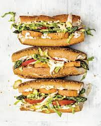

Sweet Potato Po Boys

Description
A vegan twist on a classic lousiana dish
Ingredients
- Sweet potato
- French Bread
- Coleslaw
- Breading
- Garlic Aolia
- Fennel Marmalade
Steps
- Cut the sweet potato into discs, bake them at 400F for 20 minutes
- Once baked, bread them and then fry them
- Add everything to the french bread